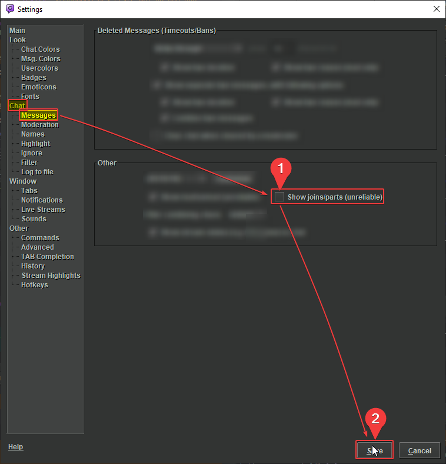
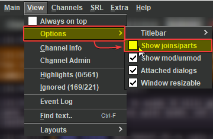
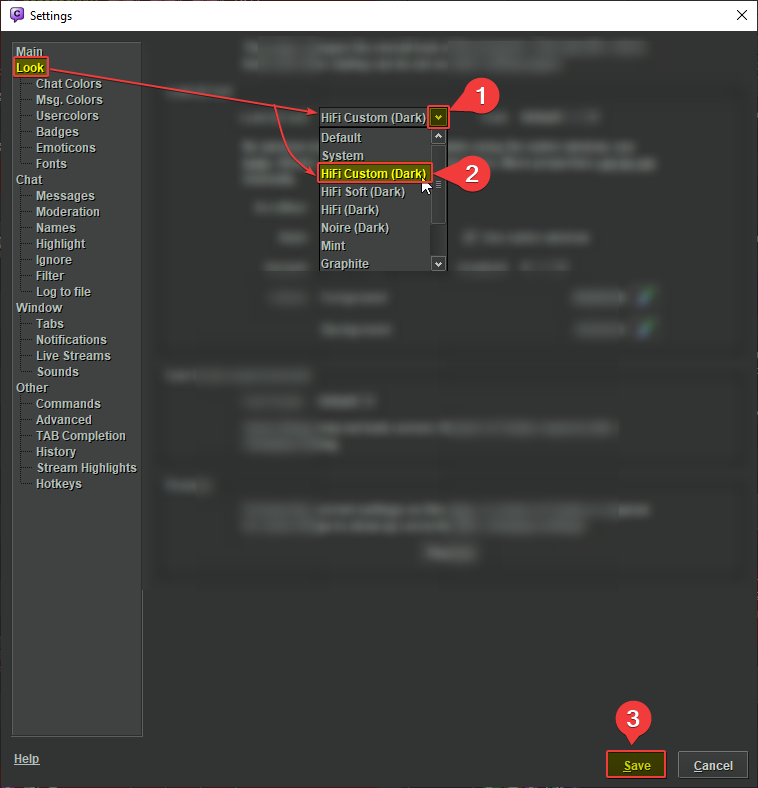
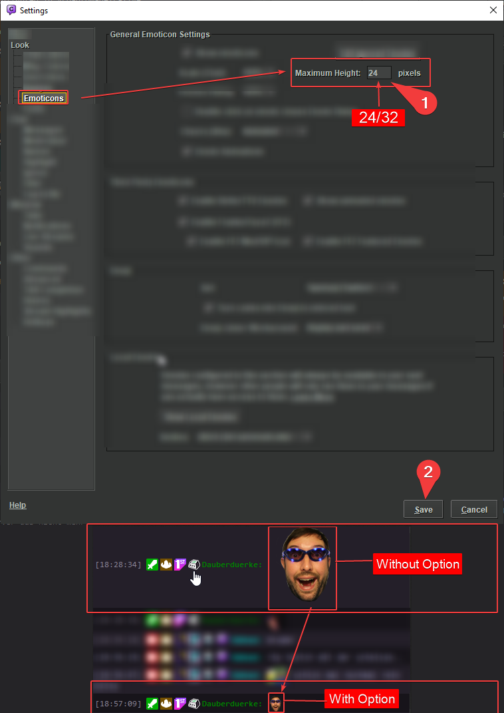
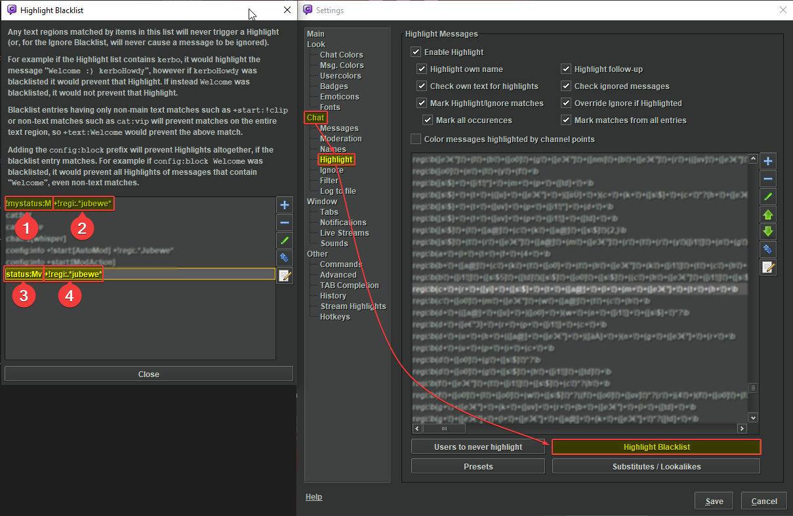
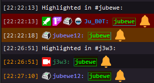

1) Join/Part
If you want to hide the joins/parts, disable the option
Same process to show them in other direction

or

2) Changing Chat Colors
Customize your Chat colors:
(Recommendation: HiFi Custom (Dark))

3) Setting max emote size
Set the max emote size to prevent the oversize emotes

4) Highlights
You can highlight different things which appear in a seperate tab (Chatty: View -> Highlights)
New Highlights can be added in Settings -> Chat: Highlight
You have many options for the items, for example you can highlight a message in the channel "test" only by adding "chan:test" before your highlight
That also works the other way: you can ignore a highlight in a specific channel by adding a "!" before the matching prefix, that would be "!chan:test" in our case
All Highlight Prefixes
More detailed explaination by the Chatty dev
5) Highlight Blacklist
You can blacklist things from being highlighted
That means you can except things from being highlighted, e.g. in channels you are not a mod in

Picture:
- Blacklist highlights in channels you are not a mod in
- - Except the message includes "jubewe" (in any channel)
- Doesn't highlight if the user is a Broadcaster/Moderator/Global Moderator/Admin/Staff or Vip
- - Except the message includes "jubewe" (from any user)

Picture:
- Highlights "jubewe" in every channel from every user